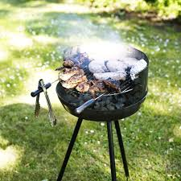
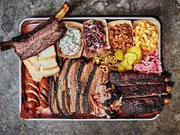

Pure American, timeless, memory making magic. BBQing brings people of evry credes together to share great food, cold drinks, and make fond memories. The BBQ seems to take us back to a primative time when families had to cook their fresh caught meals over an open flame. Not much has changed in this style of cooking since man first made fire and cooked the first meal. Some changes though would be the introduction of propane (and propane excessories) and instead of a rock pit, we now have the modern grill. But that ancient way of life still lives everytime we spark up a cured white oak log and bring it down to an ember to slow cook a grade A piece of meat.

So for the sake of our ancesters and an ode to old times I'm going to stick to using wood to cook with for my recipe. I'm going to lay out a meal that I like to make which I learned from my dad around countless fires and so many good times. I'll cover a couple appatizers, sides, and how to cook a savory steak or a beer-can chicken. I hope you enjoy these as much as I have and can create fond memories with people you love and care about.
First Lets Head to the Store
Thats just the starters.. yumm now the sides
And for the mains... (drumroll please)
As you can see its looks like alot of food and alot of work, but it really isnt and its fun. I'm going to try and break this down as best I can from the prep work to the order you put food on the grill and on to how so serve it. So take these directions loosly because each fire is diferent, each steak is unique, and everyone has their own style, or prefrence in cook. So I encourage you to have fun, adopt your own style and enjoy the process as much as the end reward. Here We Go
To Start First the day before you plan the big cook off you should marinate both the chicken and the tri-tip. I like to use a Santa Maria Style seasoning for my steak and the chicken a lemon pepper with a chicken marinade of your choice. But give it at least a day to soak.The Big Day So I like to use a hibred aproch to what I use to cook with, meaning I like to use both charchol and oak wood. For For me it just burns more evenly and I still get the oaky flavor. I'll break it down really quick.
Now that was alot of work so enjoy some of those starters before everyone else eats them. then grab a beer and enjoy that too. Because the next part is really up to you. How do you like your steak? Medium rare? Well done? Just keep an eye on it and when you think its done check it and see. But I feel like the rest of the process is pretty self explanitory, cook the meat, heat the beans, toast the bread, serve the sides how ever you want and BOOM, you just BBQed